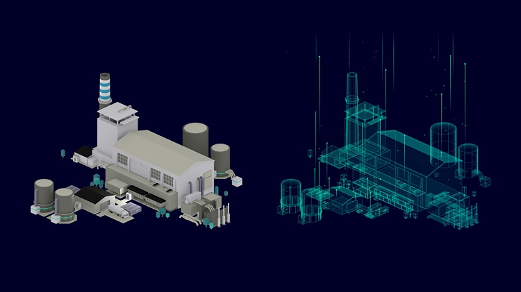

Geospatial Digital Transformation
We replace paper-based workflows and disconnected systems with cloud-powered spatial platforms — helping governments, development organizations, and enterprises across Africa become data-driven and spatially intelligent.
Digitizing operations for leading organizations across East Africa

What We Do
From Paper to Platform — At Any Scale
We design and deploy cloud-connected spatial systems that replace manual workflows, digitize field data collection, and deliver real-time operational visibility — built specifically for Africa's connectivity, data needs, and budget realities.
- Workflow digitization — permit systems, approval processes, field inspections
- Cloud GIS platform deployment on OrionGIS
- Mobile field data collection & real-time office sync
- Spatial data infrastructure & geodatabase design
- Executive dashboards & real-time KPI reporting
Who We Serve
Digital transformation solutions built for the sectors that shape Africa's development
Government & Land Agencies
Digitize land registries, automate permit and approval workflows, and give executives real-time spatial dashboards — replacing paper-based systems with cloud GIS platforms that scale across an entire county or ministry.
NGOs & Development Organizations
Replace spreadsheet data management with mobile-first field collection, automated sync, and live program dashboards — giving headquarter teams real-time visibility of field activities and donor-ready spatial reports.
Engineering & Infrastructure
Digitize project portfolio tracking, asset condition registers, and inspection workflows — giving project managers and engineers a live spatial view of all active projects, assets, and compliance status.
Utilities & Telecoms
Spatially indexed asset registers, network planning tools, and maintenance scheduling systems — enabling operations teams to manage thousands of assets in real time on a platform accessible from the field or HQ.
Agriculture & Land Management
Digitize farm registration, land use permits, and agricultural extension workflows — enabling large-scale programs to collect, manage, and analyze spatial field data without paper forms or manual entry.
Financial & Insurance
Spatially-indexed property valuation platforms, risk zoning tools, and satellite-based crop insurance verification systems — enabling faster underwriting decisions backed by verified location data.
How We Work
A structured transformation methodology from readiness assessment to live platform
Process Discovery & Readiness Assessment
We map your workflows, data assets, and technology gaps to identify the highest-value digitization opportunities.
Solution Architecture & System Design
We design the right platform stack, data models, and integration points to connect field teams, office systems, and executives.
Platform Build & Data Migration
We configure your cloud GIS environment, migrate historical datasets, and automate data collection pipelines end-to-end.
Deployment, Training & Change Management
We roll out the platform with hands-on training and change management support — ensuring adoption at every level of the organization.
Ongoing Support & Improvement
We provide post-deployment support, system updates, and capability reviews as your organization grows and data needs evolve.
What You Gain
The transformation our clients experience when they go digital with Orion Terrametrics
Eliminate Paper Bottlenecks
Replace slow, error-prone manual processes with automated spatial workflows — reducing data turnaround from weeks to hours and freeing your team to focus on decisions, not data entry.
Real-Time Operational Visibility
Live dashboards and field-to-office pipelines give managers and executives an always-current view of operations, assets, and service delivery — from headquarters or the field.
Scalable Across Your Organization
Cloud-native platforms grow with you — from a pilot department to an enterprise-wide rollout — without re-engineering, and with role-based access for every team level.
Data-Driven Decision Making
Spatial analytics, automated reports, and interactive maps turn raw field data into actionable intelligence — enabling better planning, faster approvals, and evidence-based policy.
Selected Projects
A snapshot of digital transformation engagements across government, NGO, and enterprise clients

Infrastructure Asset Register – Utility Operator
Digitized 12,000+ utility assets onto a cloud GIS platform with automated condition tracking, maintenance scheduling, and executive reporting dashboards.
"Orion Terrametrics transformed how we manage land data. What used to take weeks of manual processing now happens in real time on a spatial dashboard our entire team can use."
Ready to Go Digital?
Book a discovery call with our solution architects — we'll map your current workflows, identify the highest-value digitization opportunities, and show you what's possible on OrionGIS.